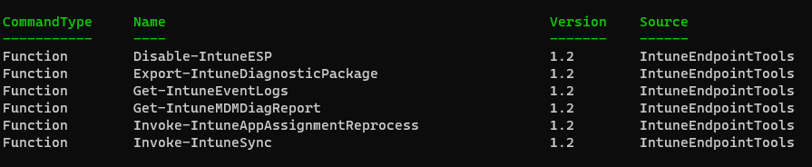

Intune Endpoint Tools PowerShell Module

I am proud to introduce the PowerShell module IntuneEndpointTools. This is the first PS module I have published to the PowerShell gallery.
IntuneEndpointTools contains a set of tools for managing and diagnosing Intune MDM on Windows endpoints designed with Intune support staff in mind. Easily perform diagnostic/troubleshooting operations such as getting the MDM diagnostic report, full diagnostic package, forcing a full sync to Intune, forcing reprocessing of assigned applications, and more!
Check it out over on GitHub! IntuneEndpointTools
Read other posts